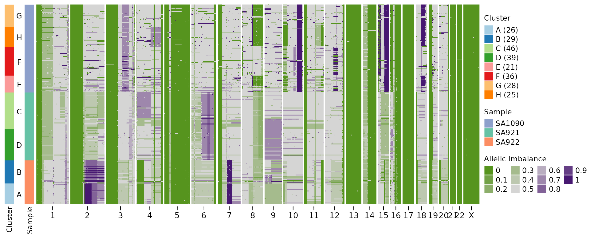

Beta-Binomial model for schnapps
BetaBinom.Rmdlibrary(schnapps)
Background
This vignette demonstrates how to use a beta-binomial model instead of a binomial model for the HMM emission model.
Inference
data(haplotypes) data(CNbins) haplotypes <- format_haplotypes_dlp(haplotypes, CNbins) hscn <- callHaplotypeSpecificCN(CNbins, haplotypes, likelihood = "binomial") #> #> A B C #> 90 72 73 print(hscn) #> Haplotype specific copy number object #> #> Number of cells: 235 #> Bin size: 0.5 Mb #> Inferred LOH error rate: 0.017 #> Emission model for HMM: binomial #> Average distance from median to expected BAF = 0.0043 hscn_bb <- callHaplotypeSpecificCN(CNbins, haplotypes, likelihood = "betabinomial") #> VGLM linear loop 1 : loglikelihood = -317861.0852 #> VGLM linear loop 2 : loglikelihood = -314164.7918 #> VGLM linear loop 3 : loglikelihood = -313672.2352 #> VGLM linear loop 4 : loglikelihood = -313649.3851 #> VGLM linear loop 5 : loglikelihood = -313649.0006 #> VGLM linear loop 6 : loglikelihood = -313648.9962 #> VGLM linear loop 7 : loglikelihood = -313648.9962 #> #> A B C #> 90 72 73 print(hscn_bb) #> Haplotype specific copy number object #> #> Number of cells: 235 #> Bin size: 0.5 Mb #> Inferred LOH error rate: 0.017 #> Emission model for HMM: betabinomial #> Inferred over dispersion: 0.0104 #> Tarones Z score: 190.317 #> Average distance from median to expected BAF = 0.0047
We see that the model inferred a modest degree of overdispersion in the data.
Below I’ll plot the heatmaps for the two output, which in this case are very similar.
Binomial model
plotHeatmap(hscn, plotcol = "state_BAF", plottree = FALSE, spacer_cols = 15) #> #> A B C D E F G #> 21 25 44 36 36 37 36

Beta-Binomial model
plotHeatmap(hscn_bb, plotcol = "state_BAF", plottree = FALSE, spacer_cols = 15) #> #> A B C D E F G #> 21 25 44 36 36 37 36

QC plot
To interrogate the difference between the binomial and beta-binomial models we can plot the BAF and overlay the two models.
plotBBfit(hscn_bb)

We can check how similar the results are by comparing the two dataframes. We find for this data that the results are almost identical.
print(dim(hscn$data)) #> [1] 507878 19 print(dim(hscn_bb$data)) #> [1] 507878 19 all.equal(orderdf(hscn$data), orderdf(hscn_bb$data)) #> [1] "Component \"state_min\": Mean relative difference: 0.5664837" #> [2] "Component \"Maj\": Mean relative difference: 0.3540323" #> [3] "Component \"Min\": Mean relative difference: 0.5019594" #> [4] "Component \"state_AS_phased\": 5611 string mismatches" #> [5] "Component \"state_AS\": 1631 string mismatches" #> [6] "Component \"LOH\": 1623 string mismatches" #> [7] "Component \"phase\": 3417 string mismatches" #> [8] "Component \"state_phase\": 4628 string mismatches" #> [9] "Component \"state_BAF\": Mean relative difference: 0.6641119"
Another thing we can check is the total number of segments identified by the HMM. Using the beta-binomial model should reduce the influence of any noisy regions and thus we might expect fewer segments. We do observe fewer segments but the difference is minimal.